25.08.11
Jimin Park
Assumption
Definition
Time series anomalies $\doteq$
An anomaly detection algorithm $\doteq$
Takes $X$ as input and outputs binary labels $\{y_1,\dots,y_T\}$.
Trend anomalies $\doteq$
Frequency (Seasonal) anomalies $\doteq$
Contextual point anomalies $\doteq$
Individual data points deviate from the expected pattern of the time series,
even while remaining within the overall regular range of values.
Out-of-range anomalies $\doteq$
Shapelet anomalies $\doteq$
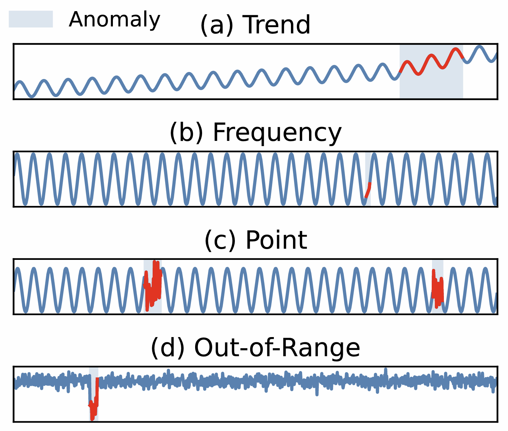
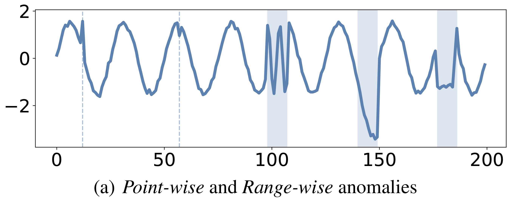
No evidence is found that explicit reasoning prompts via CoT improve
LLMs’ performance in time series analysis.
Time series anomalies are better detected by MLLMs as images than by LLMs as text.
LLMs perform worse when the input time series have more tokens.
Real-world time series does not increase the difficulty of time series anomaly detention.
Open-source MLLMs outperform proprietary models in detecting point-wise and
range-wise anomalies.
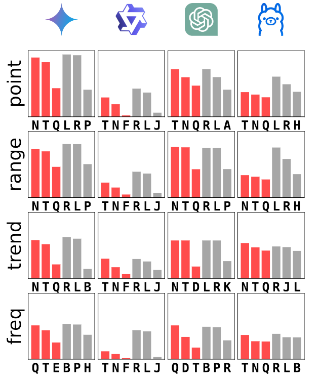
Reflexive (prompt that induces reasoning) / Reflective (prompt asks for direct answer)
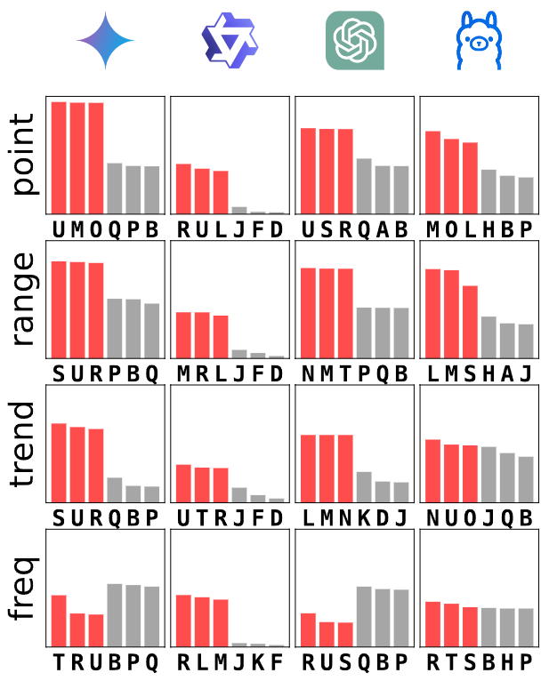
Vision (prompt with visualized time series) / Text (raw numerical prompt)
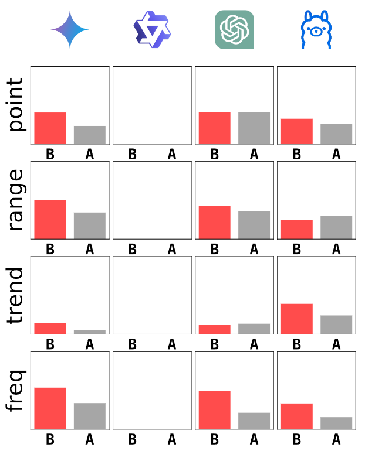
Subsampled (time series subsampled 30% to be shorter) / Original
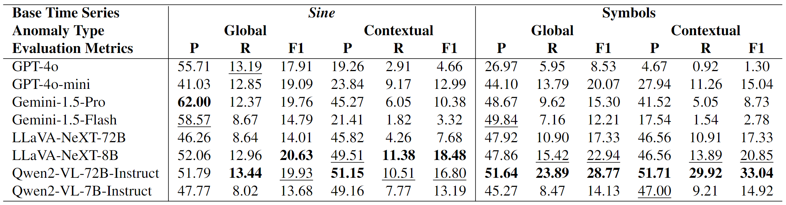
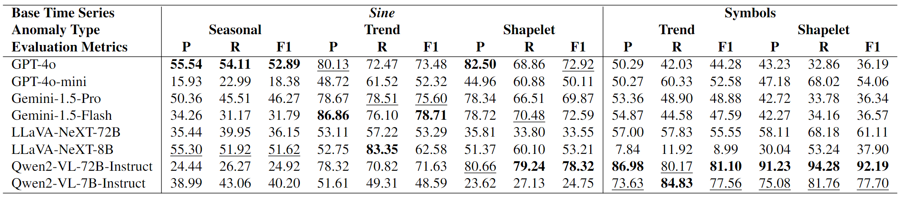
The variate-wise anomalies can be generally identified by MLLMs.
Proprietary MLLMs outperform opensource models in the multivariate scenario.
The detection of variate-wise anomalies heavily depends on patterns of the
majority of variables within a multivaraite time series.
MLLMs are sensitive to dimensionality and can generate hallucination for
multivariate time series.
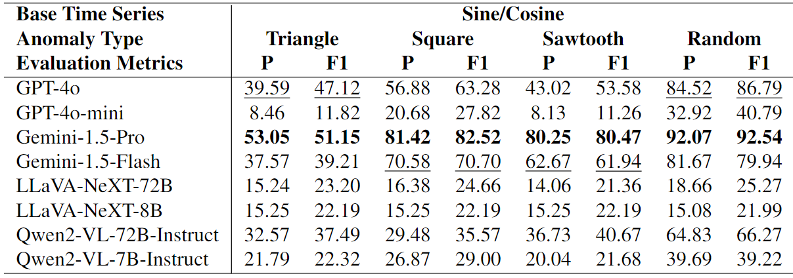
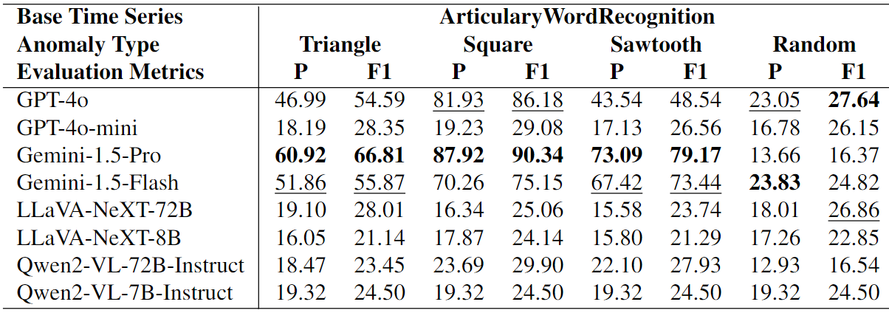
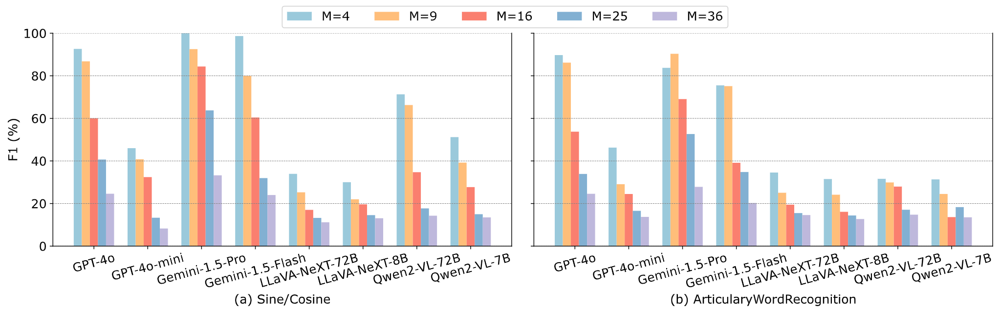
The impact of number of dimensions $M$ on MLLMs for variate-wise anomalies.
A Reinforcement Learning with Verifiable Rewards (RLVR) $\doteq$
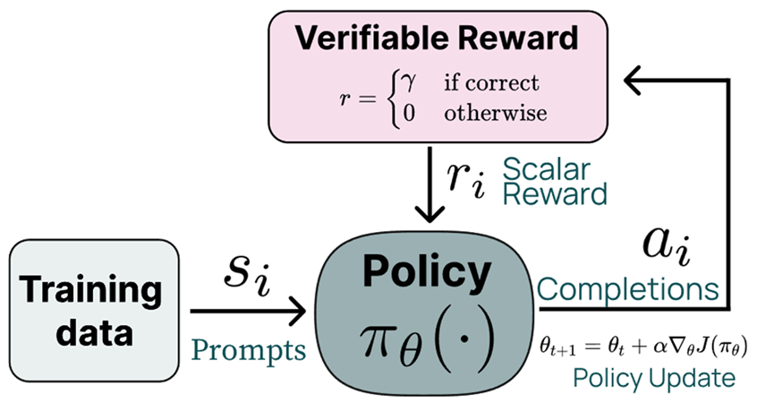
$$ \underbrace{\mathtt{\langle think \rangle \cdots \langle /think \rangle}} _ {\text{Reasoning}} \quad \underbrace{\mathtt{\langle class \rangle \cdots \langle /class \rangle}} _ {\text{Anomaly Type}} \quad \underbrace{\mathtt{\langle range \rangle \cdots \langle /range \rangle}} _ {\text{Anomaly Range}} \quad $$
think block expresses reasoning on anomaly detection.class block expresses the type of anomaly.range block expresses the range of anomalies.$$ r = \lambda^{\text{format}} r^{\text{format}} + \lambda^{\text{class}} r^{\text{class}} + \lambda^{\text{range}} r^{\text{range}}. $$
$r^{\text{format}}(\hat{\mathbf{y}}) = \mathbb I[\text{the format of } \hat{\mathbf{y}} \text{ is correct}]$
$r^{\text{format}}(\hat{c}, c) = \mathbb I[\hat{c}=c]$
$r^{\text{range}}( \hat{\mathbf r}, \mathbf{r}) = \text{Affilation-F1}(\text{Range2Vec}(\hat{\mathbf r}), \text{Range2Vec}(\mathbf{r}))$
$\hat r$ and $r$ are the predicted and the ground-truth anomaly ranges, repectively.
$\text{Range2Vec}$ converts range to bit array.
$\text{Affilation-F1}$ is the harmonic mean of affilation precision and recall.
Base Model
Training
RL Algorithm: GRPO
Synthetic dataset: 400 series
Accept LoRA (rank 16) on all linear layers except visual layer.
Train the model with RTX 3090 $\times$ 4.
| Type-A | Type-F1 | Range-P | Range-R | Range-F1 | |
|---|---|---|---|---|---|
| Qwen2.5-VL-3B-Instruct | 0.230 | 0.204 | 0.246 | 0.279 | 0.248 |
| Qwen2.5-VL-3B-Instruct-RL | 0.893 | 0.875 | 0.845 | 0.858 | 0.846 |
| Qwen2.5-VL-3B-Instruct-RL-wo-type | 0.818 | 0.610 | 0.711 | 0.769 | 0.732 |
Qwen2.5-VL-3B-Instruct-RL is RL-trained LLM with all types of reward.
Qwen2.5-VL-3B-Instruct-RL-wo-type is our RL-trained LLM without type reward.
Type-A and Type-F1 represent the accuray and F1 scores for type anomaly classification, respectively.
Range-P, Range-R, and Range-F1 represent the mean of affilation precision, recall, and F1, respectively.
| Type-A | Type-F1 | Range-P | Range-R | Range-F1 | |
|---|---|---|---|---|---|
| Qwen2.5-VL-3B-Instruct | 0.230 | 0.204 | 0.246 | 0.279 | 0.248 |
| Qwen2.5-VL-3B-Instruct-RL | 0.893 | 0.875 | 0.845 | 0.858 | 0.846 |
| Qwen2.5-VL-3B-Instruct-RL-wo-type | 0.818 | 0.610 | 0.711 | 0.769 | 0.732 |
Integrating the range score and classification score into the reward helps improve the anomaly detection.
Only using range score in reward improves the anomaly classification performance.
Contextual Point Anomaly
| Type-A | Type-F1 | Range-P | Range-R | Range-F1 | |
|---|---|---|---|---|---|
| Qwen2.5-VL-3B-Instruct | 0.025 | 0.011 | 0.295 | 0.377 | 0.319 |
| Qwen2.5-VL-3B-Instruct-RL | 0.955 | 0.636 | 0.904 | 0.915 | 0.904 |
| Qwen2.5-VL-3B-Instruct-RL-wo-type | 0.905 | 0.371 | 0.592 | 0.718 | 0.644 |
Trend Anomaly
| Type-A | Type-F1 | Range-P | Range-R | Range-F1 | |
|---|---|---|---|---|---|
| Qwen2.5-VL-3B-Instruct | 0.070 | 0.037 | 0.140 | 0.199 | 0.160 |
| Qwen2.5-VL-3B-Instruct-RL | 0.895 | 0.888 | 0.890 | 0.891 | 0.890 |
| Qwen2.5-VL-3B-Instruct-RL-wo-type | 0.855 | 0.567 | 0.830 | 0.870 | 0.846 |
Frequency Anomaly
| Type-A | Type-F1 | Range-P | Range-R | Range-F1 | |
|---|---|---|---|---|---|
| Qwen2.5-VL-3B-Instruct | 0.250 | 0.073 | 0.233 | 0.317 | 0.258 |
| Qwen2.5-VL-3B-Instruct-RL | 0.645 | 0.224 | 0.568 | 0.657 | 0.580 |
| Qwen2.5-VL-3B-Instruct-RL-wo-type | 0.275 | 0.119 | 0.481 | 0.626 | 0.527 |
Out of Range Anomaly
| Type-A | Type-F1 | Range-P | Range-R | Range-F1 | |
|---|---|---|---|---|---|
| Qwen2.5-VL-3B-Instruct | 0.435 | 0.148 | 0.353 | 0.292 | 0.305 |
| Qwen2.5-VL-3B-Instruct-RL | 0.960 | 0.955 | 0.898 | 0.888 | 0.887 |
| Qwen2.5-VL-3B-Instruct-RL-wo-type | 0.955 | 0.950 | 0.885 | 0.892 | 0.882 |
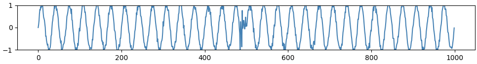
<think> The time series data shows a clear sine wave pattern with some sudden spikes and drops. The most noticeable anomaly is a sharp spike at approximately timestamp 480, which is a clear out-of-range anomaly as it deviates significantly from the expected pattern. This spike is the only anomaly detected in the time series data. </think>
<class> Contextual Point </class>
<range> [[480, 490]] </range>
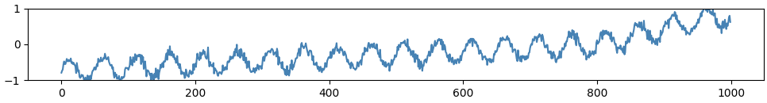
<think> The time series data shows a clear upward trend over time, with the values fluctuating but generally increasing. The data points around timestamp 800 show a sudden and significant increase, which suggests a trend anomaly. The sudden spikes and drops are not out of the normal range, nor do they disrupt the periodicity or context of the data. Therefore, the most appropriate anomaly type for this data is "Trend". </think>
<class> Trend </class>
<range> [[800, 1000]] </range>
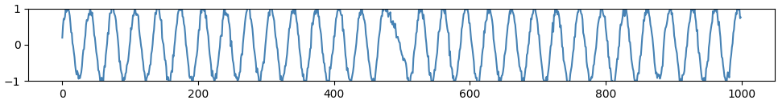
<think> The time series data shows a clear pattern of oscillations, which suggests that the anomalies detected might be related to frequency. The data points show sudden dips and rises, which could indicate frequency anomalies. These dips and rises disrupt the expected periodicity of the time series, making them frequency anomalies. </think>
<class> Frequency </class>
<range> [[450, 550]] </range>
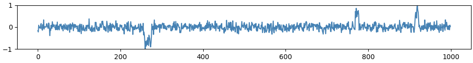
<think> The time series data shows sudden spikes and drops that are far outside the normal range of values, which are characteristic of Out of Range Anomalies. These spikes and drops are not part of a trend, frequency, or contextual pattern, but rather deviations from the expected normal behavior. </think>
<class> Out of Range </class>
<range> [[250, 270], [275, 285], [750, 770], [900, 920]] </range>
Enhance the reasoning ability of LLMs on time series anomaly detection task
using reinforcement learning.
Adapt RLVR framework to time series anomaly detection task using
appropriately desinged reward.
Not only using affilation scores, but also incoporating anomaly type
classification reward, which helps reinforcing the reasoning ability of LLM.
Improve the performance for frequency anomaly type.
Improve reasoning on multivariate time series.
Design new RL algorithm for time series anomaly detection tasks.